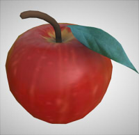
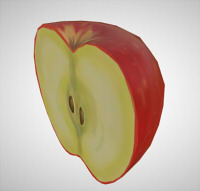
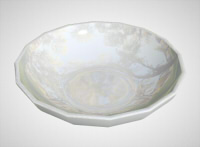
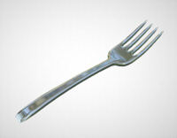
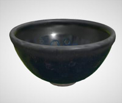
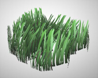
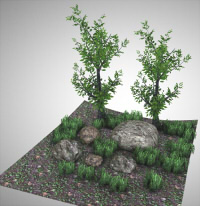

| 形状名 | Shade3Dのファイル | glbファイル | 説明 |
|---|---|---|---|
| Apple | apple.shd | apple.glb | リンゴの形状。 頂点カラーを使用。 マテリアルとしてDoubleSidedを使用。  |
| Apple cut | apple_cut.shd | apple_cut.glb | リンゴを半分に切った形状。 フェイスグループ（1メッシュに複数のマスターサーフェス（マテリアル）割り当て）を使用。  |
| Dish | dish.shd | dish.glb | 皿の形状。 テクスチャイメージを使用しない。  |
| Fork | fork.shd | fork.glb | フォークの形状。 金属の反射表現。 OpenSubdivの使用。  |
| Cyawan | cyawan.shd | cyawan.glb | 曜変天目茶碗（風)の形状。 Substance Painterから出力したglbをShade3Dにインポートしたもの。 Occlusion/Roughness/Metallicが1テクスチャにパックされている。  |
| Grass | grass.shd | grass.glb | 草の形状。 頂点カラーを使用。 マテリアルとしてDoubleSidedを使用。 拡散反射のマッピングレイヤで「アルファ透明」を使用(glTFのALPHA_MASK/alpha cutoffを使用)。  |
| Rocks and trees and grass | rocks_trees_ao.shd | rocks_trees_ao.glb | 木と岩と草のシーン。 複数のテクスチャイメージと形状を使用。 頂点カラーを使用。 マテリアルとしてDoubleSidedを使用。 拡散反射のマッピングレイヤで「アルファ透明」を使用(glTFのALPHA_MASK/alpha cutoffを使用)。  |